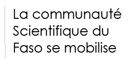
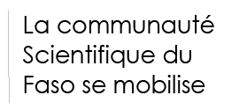

Politique de confidentialité pour la plate-forme Bf-Covid19
1. Préface
La Coalition de la Recherche du Burkina Faso, une initiative conjointe du secteur public de la recherche Burkinabè, mobilise ses connaissances et ses ressources pour aider à relever le défi de COVID-19. Un groupe de travail a été mis en place afin d'offrir au système de santé l'expertise combinée disponible au sein du secteur de la recherche publique Burkinabè. Dans le cadre de ce travail, la Coalition a chargé Incub@uo de mettre en place une plateforme nationale en ligne COVID-19. En conséquence, Incub@uo a lancé le . L'objectif de cette plate-forme est de faciliter la communication au sein de la communauté des chercheurs Burkinabè et d'accélérer le lancement, la coordination et l'exécution des projets de recherche.
Voici la politique de confidentialité de la plate-forme en ligne Bf-Covid19, le processeur de données, au nom de la coalition de la recherche du Burkina Faso, le contrôleur de données ci-après dénommés "nous", "notre", "nos".
Dans cette politique, nous décrivons ce que données personnelles ("données") que nous recueillons lorsque les personnes concernées ("vous", "votre") visitez nos sites et utilisez nos services, à quelles fins ces données sont collectées, où et combien de temps elles sont conservées et vos droits concernant les données conformément au règlement général de l'UE sur la protection des données ("GDPR"). Nous avons également dressé la liste des personnes à contacter en cas de demandes et d'enquêtes sur les données et la protection des données.
| Site web principal | Accueil C'est le point d'entrée et la page d'accueil de la plateforme Bf-Covid19. Elle fournit des liens vers d'autres sites web de la plate-forme. Le site web principal est accessible au public. |
| Catalogue de projets | projets Il s'agit d'un catalogue public de projets de recherche que les membres et collaborateurs de la coalition de la du Burkina faso peuvent utiliser pour publier des idées de nouveaux projets ou des informations sur des projets en cours ou terminés. Le catalogue de projets est accessible au public. |
| Formulaire de soumission d'un catalogue de projets | sommettre un projet Il s'agit d'un formulaire web pour la publication de nouvelles entrées dans le catalogue de projets. Le formulaire de soumission de projet est accessible au public. |
Le reste du document politique est organisé comme suit. Dans la section 2, nous indiquons les coordonnées du responsable du traitement des données. Dans la section 3, nous énumérons vos droits concernant les données à caractère personnel collectées. Au chapitre 4, nous résumons les mesures prises pour protéger les données à caractère personnel. Dans la section 5, nous énumérons les données à caractère personnel communément collectées sur les quatre sites web de la plateforme Bf-Covid19. Nous indiquons où les données sont stockées, à quelles fins elles sont utilisées et la base légale pour le traitement des données. Dans la section 5, vous trouverez également la politique de nos sites en matière de cookies.
2.Qui est le responsable du traitement des données?
La coalition de la Recherche du Burkina Faso est le responsable du traitement des données.
3. Quels sont vos droits concernant les données que nous recueillons?
Selon le GDPR, vous avez, en tant que "personne concernée", des droits sur vos données personnelles.
Vous avez le droit d'être informé que la coalition de la recherche du Burkina Faso traite vos informations personnelles.
Vous avez le droit d'accéder à vos informations personnelles et, si elles sont inexactes ou incomplètes, vous avez le droit de les faire rectifier sans délai excessif.
Vous avez le droit de nous demander de supprimer vos données personnelles ou de limiter leur utilisation. Le cas échéant, vous avez le droit de vous opposer à notre traitement de vos données à caractère personnel et le droit à la portabilité des données. Nous évaluerons vos demandes de suppression et de limitation du traitement et vous communiquerons le résultat de cette évaluation dans un délai d'un mois à compter de la réception de la demande. Ce délai peut être prolongé de deux mois supplémentaires si nécessaire, en tenant compte de la complexité et du nombre de demandes (conformément à l'article 12.3 du GDPR).
Vous pouvez nous demander de vous informer en cas de modification de vos données personnelles ou si vos données ont été transmises à une autre partie.
Vous avez le droit de déposer une plainte auprès de l'autorité Burkinabè de contrôle de la protection des données, la CNPD, si vous estimez que notre traitement de vos données à caractère personnel enfreint la GDPR.
4. Comment protégeons-nous vos données ?
La coalition de la Recherche du Burkina Faso, au nom et sur instruction de la coalition de la Recherche du Burkina Faso, a mis en place un certain nombre de mesures organisationnelles et techniques pour la protection de vos données personnelles en conformité avec le GDPR de l'UE. Ces mesures comprennent, sans s'y limiter, le contrôle d'accès, la transmission cryptée des données, les politiques institutionnelles, le code de conduite du personnel et la formation sur la protection des données.
Seul le personnel autorisé de la coalition de la Recherche du Burkina Faso et de son institution hôte peut accéder aux données. Parmi ces personnes figurent les administrateurs des systèmes informatiques de la coalition de la Recherche du Burkina Faso et les responsables de la gestion des données qui communiquent avec les contacts du projet.
Les types de données personnelles collectées sur nos sites, leur stockage, leur utilisation et leur partage sont décrits dans les sections suivantes. Veuillez noter que:
- Aucune donnée personnelle collectée sur le site de la plateforme Bf-Covid19 n'est utilisée à des fins de marketing direct.
- Les données collectées sur la plate-forme ne seront pas transmises à des tiers.
5. Sites web de la plate-forme Bf-Covid19
5.1 Informations pour les visiteurs du site
Les données et leur finalité d'utilisation
Lorsque vous visitez l'un des quatre sites web Bf-Covid19 énumérés dans la préface, nous recueillons les informations suivantes :
- votre adresse IP,
- votre type de dispositif, votre nom et votre ID,
- votre version du navigateur,
- votre système d'exploitation et vos paramètres linguistiques,
- date et heure de la demande d'accès aux ressources web,
- contenu de la demande d'accès,
- état et taille de la réponse à une demande.
Ces informations sont automatiquement collectées par un logiciel côté serveur qui fournit des pages aux visiteurs du site. Nous utilisons ces données pour analyser l'utilisation du site, ce qui nous permet d'optimiser et de sécuriser davantage notre site. Les données ne seront utilisées qu'à des fins statistiques.
Base juridique
Les informations sur les visiteurs du site nous sont nécessaires pour vous livrer le site web ainsi que pour garantir la stabilité et la sécurité du site web. Il est dans notre intérêt légitime (article 6(1)(f) du GDPR) de collecter et d'utiliser les informations sur les visiteurs du site.
Nous stockons les données des visiteurs du site sur des serveurs situés au Burkina, plus précisément au centre de données de l'Université virtuel du Burkina, pour une période maximale de 12 mois. Les journaux des visiteurs sont supprimés après cette période, les statistiques agrégées sur les visites du site sont stockées pour une durée indéterminée.
Les informations sur les visiteurs du site recueillies par notre logiciel côté serveur ne sont pas transférées vers un autre pays.
3.2 Cookies de site
Les sites web de la plateforme Bf-Covid19 utilisent des cookies. Les cookies sont des éléments d'information qui sont créés et conservés par votre navigateur web lorsque vous visitez un site web. Les cookies sont classés en deux catégories : les cookies de première partie et les cookies de tiers. Les cookies de première partie sont placés par le site web que vous visitez et ne suivront pas votre activité une fois que vous aurez quitté ce site. Les cookies tiers sont souvent placés par un autre site que celui que vous visitez, par exemple des publicités, des widgets de médias sociaux, et ils peuvent continuer à suivre votre activité sur d'autres sites.
Les sites web de la plateforme Bf-Covid19 sont conçus pour utiliser les cookies énumérés ci-dessous:
-
Optimisation et cookies de sécurité
Nos sites sont équipés de load balancers et de firewalls gérés par la coalition. En conséquence, des cookies supplémentaires nommés "LBServer" et "TS*" seront placés dans votre navigateur. -
Cookies d'authentification
Lorsque vous vous connectez à notre forum de discussion, nous plaçons des cookies d'authentification. Plus précisément, "_bypass_cache" "forum_session" et "_t" seront placés pour connaître votre préférence à retenir et le fait que vous vous êtes authentifié.
Les cookies d'optimisation, de sécurité et d'authentification sont des cookies de première partie et ne contiennent aucune information personnelle.
Normalement, les cookies sont stockés sur votre ordinateur jusqu'à la fin de leur période d'expiration résumée ci-dessous. Vous pouvez également choisir d'effacer les cookies de votre navigateur manuellement.
| Catégorie de cookie | Nom du cookie | Période d'expiration |
|---|---|---|
| Optimisation & Sécurité | LBServer | Fin de la session de navigation |
| Optimisation & Sécurité | TS* | Fin de la session de navigation |
| Authentification | _bypass_cache | Fin de la session de navigation |
| Authentication | _t | 60 jours |
| Authentication | _forum_session | Fin de la session de navigation |
Base juridique
L'utilisation de cookies est dans notre intérêt légitime (article 6, paragraphe 1, point f), du GDPR), car il est nécessaire que nous vous fournissions nos sites de manière stable et sûre.
Les cookies essentiels, c'est-à-dire les catégories Optimisation & Sécurité et Authentification énumérées ci-dessus, sont nécessaires au fonctionnement de nos sites web. Ces cookies sont stockés sur votre ordinateur, et les informations qu'ils contiennent sont transférées à des serveurs au Burkina, lorsque les informations des cookies sont utilisées par les serveurs de notre site.
6. Formulaire de soumission du catalogue de projets
6.1 Coordonnées du porteur de projet
Lorsque vous utilisez le formulaire de soumission du catalogue de projets Bf-Covid19 , nous vous demanderons de fournir des informations sur les personnes de contact du projet. Plus précisément, nous vous demandons de :
- Nom, prénom et courriel institutionnel des personnes considérées comme des contacts primaires et secondaires pour le projet soumis au Catalogue du projet. Ces informations seront répertoriées sur le site web du Catalogue de projets afin de permettre aux collaborateurs de recherche de vous contacter.
Les informations de contact du projet recueillies dans le catalogue de projet sont stockées sur des serveurs situés au Burkina, plus précisément au centre de données de l'Université virtuel du burkina. Les coordonnées du projet seront conservées aussi longtemps que le Catalogue de projet est en ligne, même après que vous ayez cessé d'utiliser le service. Dans le cas où les services sont mis hors service, nous conserverons les données pour le montant minimum nécessaire au respect de la GDPR et des lois Burkinabè la protection des données.
Les coordonnées du projet sont nécessaires pour que nous puissions vous offrir notre service de facilitation de la communication au sein de la communauté des chercheurs Burkinabè en réponse à la pandémie COVID-19 (GDPR Article 6(1)(f)).
Les informations de contact collectées par le Catalogue du projet ne sont pas transférées à un autre pays.